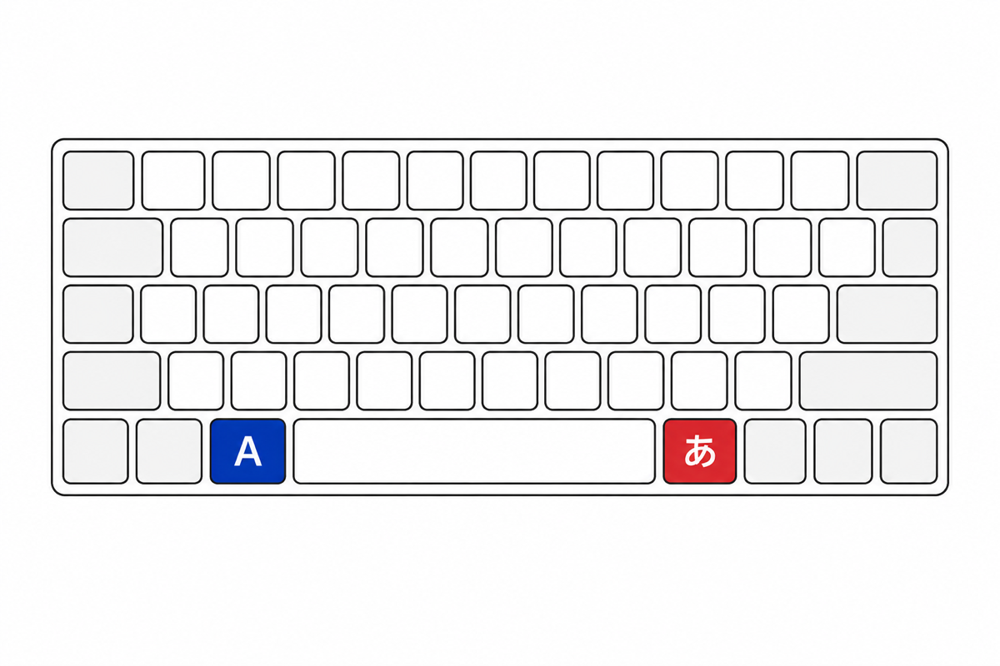
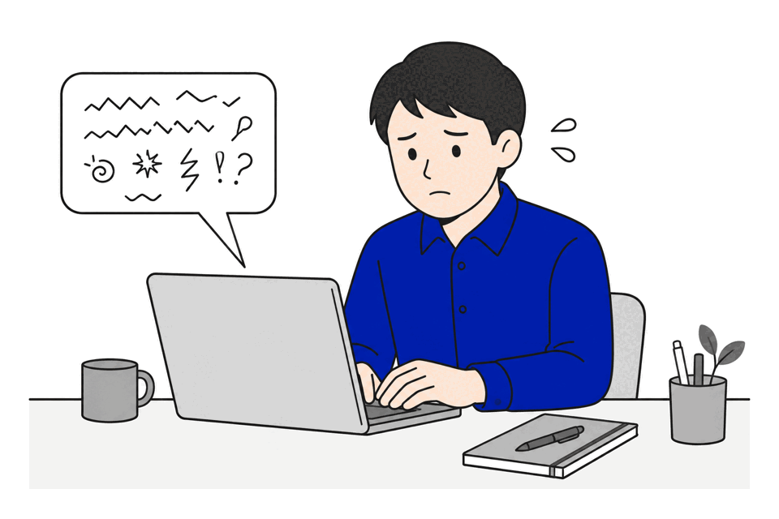
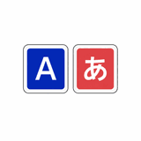
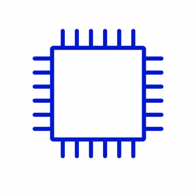
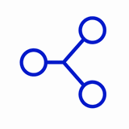
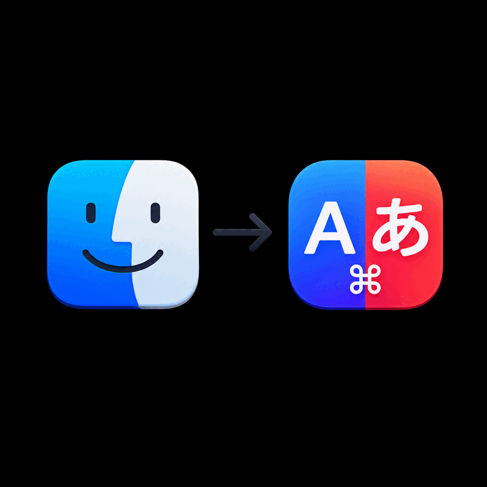
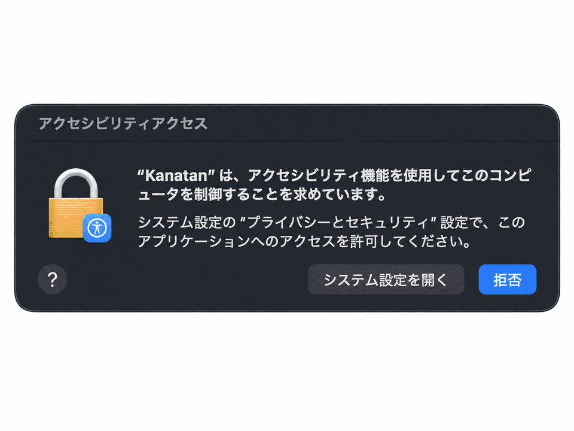
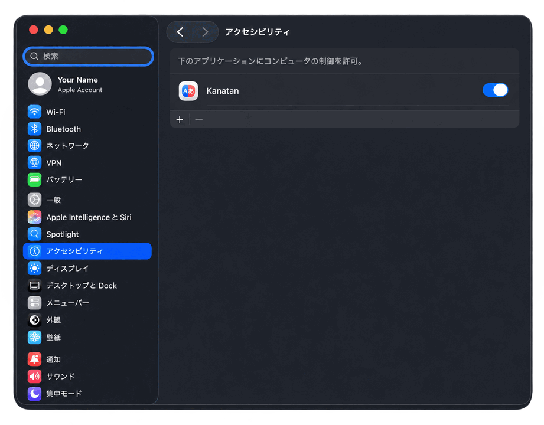
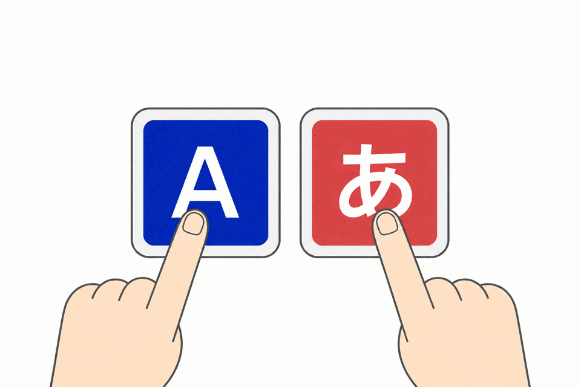

もう、入力モードで
迷わない。
左⌘で英数、右⌘でかな。
USキーボードのMacに、JISの「あの2つのキー」を取り戻す。
無料・オープンソース ／ macOS 13以降 ／ Apple Silicon & Intel対応

こんな経験、ありませんか
US配列のまま、英数／かなだけ欲しい。
- Control + Spaceにしたが、今どっちのモードか、打ってみるまでわかりにくい。
- Caps Lock切り替えにはしたくない。
- 英数切り替えの機能だけ欲しいのに他のアプリは機能過多すぎる。

Kanatanの答え
押すキーで、行き先が決まる。
Kanatanはトグルではありません。左⌘を押せば必ず英数、右⌘を押せば必ずかな。「今どっちか」を考える時間が、ゼロになります。
単体でタップすると、必ず英数（ABC）に切り替わります。
単体でタップすると、必ずかな（日本語）に切り替わります。
⌘C も ⌘Tab も、いつも通り。⌘を他のキーと組み合わせたときは、Kanatanは何もしません。
特徴
切り替えに特化した、小さな道具。

切り替えに特化、それだけ。
メニューバーに静かに常駐する小さなアプリ。仮想ドライバも、複雑な設定ファイルも不要。入れたら、もう触らなくていい。
キー入力の中身は読みません。
監視するのは⌘キーの上げ下げだけ。切り替えはJISキーボードの英数／かなキーを押したのと同じ仕組みで行います。コードはすべてGitHubで公開されています。

Apple Siliconネイティブ。
Swiftで書かれた、今のmacOSのためのアプリ。Rosettaは要りません。

無料・オープンソース。
ずっと無料。挙動が気になったら、ソースを読めます。
比較
いま使っている方法と、どう違う？
| 比較項目 | Kanatan | 高機能なキーカスタマイズアプリ | Control + Space |
|---|---|---|---|
| 左⌘=英数 / 右⌘=かな | 対応 | 対応（要ルール設定） | — |
| ステートレス（迷わない） | 対応 | 対応 | トグル式 |
| 更新状況 | 開発中 | 活発 | — |
| Apple Siliconネイティブ | 対応 | 対応 | — |
| 導入の手間 | アプリ起動+許可1つ | ドライバ導入+ルール設定 | 不要 |
| 必要な権限 | アクセシビリティのみ | 入力監視+仮想ドライバ | — |
使い方
セットアップは1分で終わります。

ダウンロード
DMGを開いて、KanatanをApplicationsへドラッグするだけ。


許可を1回だけON
アクセシビリティの許可を1回だけONにします。

もう、切り替え済み。
左⌘と右⌘を、タップしてみてください。ログイン時の自動起動もメニューからワンクリック。
サービス説明動画
30秒でわかるKanatan。
よくある質問
気になること、先に答えます。
キーロガーみたいで少し不安です。
もっともな心配です。Kanatanが読み取るのは修飾キー（⌘）の押下イベントのみで、文字キーの内容は読み取りません。切り替え時にはJISキーボードの英数／かなキーと同じキーイベントを送信します（定番のキーカスタマイズアプリでも使われている、実績のある方式です）。気になる方はGitHub上のコードをご覧ください。
他のキーカスタマイズアプリと併用できる？
併用できます。他のアプリ側に英数／かな切り替えの割り当てがある場合は、そちらをオフにしてください。
どの日本語入力に対応してる？
macOS標準の日本語入力とGoogle日本語入力で動作確認済みです。ABCレイアウトが無効な環境でも、IMEの英字モードに自動でフォールバックします。
対応環境は？
macOS 13 Ventura以降、Apple Silicon / Intelの両方に対応しています。